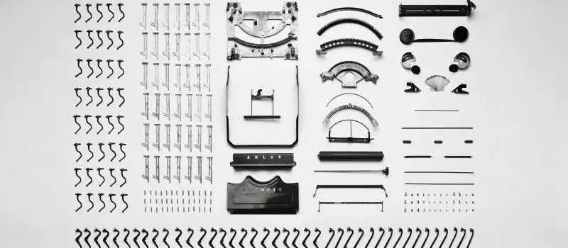

INT. EXPLAINER SCRIPTS — THE SHAPE OF ONE
Explainer scripts that say one thing well
An explainer has a short life on a busy screen. In 60 seconds to 3 minutes it has to name a problem the viewer already feels, show how your idea changes it, and leave one clear next step. We write that shape every time, then time it out loud until it fits.

INT. THE STRUCTURE — THREE BEATS
The problem line
The opening is the viewer's own complaint, said in their words, not yours. If the first ten seconds sound like a brochure, people leave. We draft several versions of this line and pick the one that reads naturally when spoken, because the ear forgives far less than the eye.
The turn
This is where your product, service or idea arrives. It is the shortest beat to write and the hardest to get right: one sentence that changes the situation, followed by two or three concrete pictures of what is different now. We resist the urge to list every feature. A viewer remembers one change, rarely five.
The payoff
The ending repeats the benefit in a single line and gives one call to action — visit the page, book the demo, download the guide. One instruction only. A pickup line sits after it for the editor, a short phrase that can run under the end card if the cut needs a few spare frames.
VOICE-OVER
(plain, close to the microphone)
Every Monday, the same spreadsheet. Twenty minutes, just to find out who is off this week. There is a shorter way.
That is the kind of opening we aim for: under ten seconds, a recognisable moment, and a promise the rest of the script must keep.
INT. THE PAGE — WHAT YOU RECEIVE
Every explainer is delivered as a two-column script. The left column holds the VO, line by line, with a running time against each block. The right column holds the picture: what is on screen, any caption, any cutaway. Your animator or editor works straight from it.
With it comes the timed read-through: an unpolished recording of the final draft read at the intended pace. It is not for broadcast. It is so you can hear where a sentence runs long, and so your voice artist knows the speed the timings assume.
INT. THE SCENE LIST — LENGTHS AND FEES
Two fixed lengths cover almost every explainer we are asked for. If yours sits between them, the longer fee applies and the script is written to your exact timing.
| Scene | What you commission | Fee |
|---|---|---|
| SC. 1 | Explainer script, up to 90 seconds | £240 |
| SC. 2 | Explainer script, up to 3 minutes | £420 |
| SC. 5 | Extra revision round | £60 |
| SC. 6 | Rush delivery (3 working days) | £90 |
The 90-second script suits a single idea for a landing page or social post. The 3-minute script suits a fuller story: a product with two or three moving parts, or an idea that needs a short example before the payoff. Both include the shot column, the read-through and two rounds of changes. Standard delivery for a first draft is seven working days after the outline is approved; rush delivery brings that to three working days.
INT. THE BRIEF — WHAT WE NEED FROM YOU
- The viewer. Who they are, what they already know, and what they are tired of hearing.
- The setting. Where the video plays: a website header, a trade-show screen, a social feed with the sound off. Silent viewing changes how much the captions carry.
- The one action. What the viewer should do once it ends.
- The length. Up to 90 seconds or up to 3 minutes.
- Your voice. A paragraph of copy you like, and a phrase you would never use.
- The visual style, if decided. Live action, motion graphics or illustration — it changes how the shot column is written.
If some of that is still undecided, say so. The outline stage exists to settle it, and we would rather ask a good question than guess.
CUT TO: